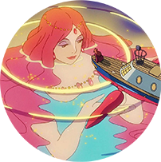

STUDIOGHIBRI
모두가 반해버린 사랑스런 소녀가 온다!
호기심 많은 물고기 소녀 ‘포뇨’는 따분한 바다 생활에 싫증을 느끼고, 급기야 아빠 몰래 늘 동경하던 육지로 가출을 감행한다.
해파리를 타고 육지로 올라온 ‘포뇨’는 그물에 휩쓸려 유리병 속에 갇히는 위기에 처하게 되고 때마침 해변가에 놀러 나온 소년 ‘소스케’의 도움으로 구출된다.
‘소스케’와의 즐거운 육지 생활도 잠시, 인간의 모습을 포기하고 바다의 주인이 된 아빠 ‘후지모토’에 의해 결국 ‘포뇨’는 바다로 다시 돌아간다.
하지만 여동생들의 도움으로 탈출에 성공한 ‘포뇨’는 소녀의 모습으로 변해 거대한 파도와 함께 ‘소스케’에게로 향하는데… 과연 포뇨는 어려움을 뚫고 소스케를 다시 만날 수 있을 것인가?
CHARACTER
포뇨
5살의 붉은 인면어로 호기심이 많은 아이이다.
마법사의 피를 이어 받았기 때문에 마법을 쓸 줄 알며 아기의 생각도 읽을 줄 안다.
소스케를 따라 인간세상으로 올라오게 되는데, 때문에 인간세상에는 큰 태풍이 불어 물에 잠기게 된다.
포뇨라는 이름은 소스케가 지어 준 이름이다.

- 
PHOTO


OST

벼랑 위의 포뇨 ost(Ponyo On The Cliff ost)
[崖の上のポニョ]
Hisaishi Joe